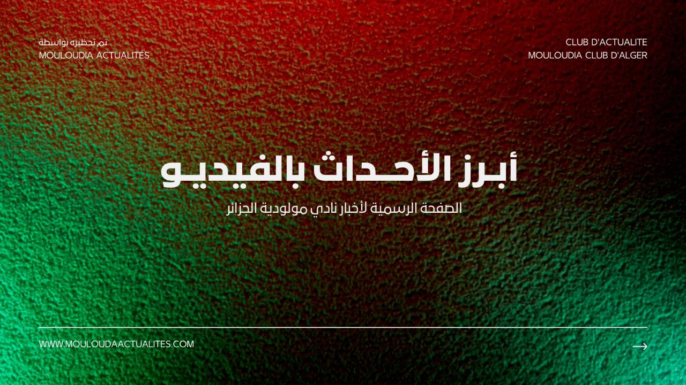

الصفحة الرئيسية
الأخبار
الفريق الأول
الفريق الثاني
تاريخ مولودية الجزائر
النتائج المباشرة
فيديوهات
(الصفحة الحالية)
اتصل بنا
من نحن
تصريحات جمال بلعامري للإعلام

تصريحات جمال بلعامري للجنة الإعلامية لنادي مولودية الجزائر بعد إنهاء عقده بالتراضي
ملعب الشهيد علي عمار "الملعب التحفة" يدشن رسميا
الفيديوهات الشائعة
تصريحات حارس مرمى مولودية الجزائر الجديد، توفيق موساوي
تصريحات لاعب خط وسط مولودية الجزائر الجديد، زكريا دراوي
استاد الشهيد علي عمار، بإذن الله، سيكون من بين الأمور الطيبة لعميد الأندية الجزائرية
كاراكاج، جماهير مولودية الجزائر، عشية النهائي في لندن